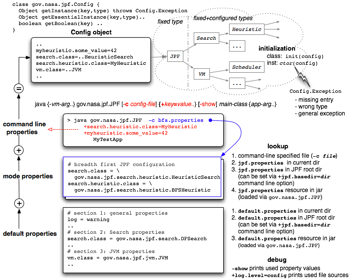

Since JPF is an open system that can be parameterized and extended in a variety of ways, there is a strong need for a general configuration mechanism. The challenge for this mechanism is that many of the parts which are subject to parameterization are configured themselves (i.e. classes instantiated via classname parameters).
This effectively prohibits the use of a configuration object that contains concrete fields to hold configuration data, since this class would be a central "design bottleneck" for a potentially open number of concrete JPF components like Search, Heuristic and Scheduler implementations.
The goal is to have a configuration object that
Figure 1: JPF configuration
The JPF configuration process uses a java.util.Property subclass to achieve this. This property instance is initialized in three steps:
The resulting property object only holds key/value pairs with String values. It is an instance of gov.nasa.jpf.Config, a utility class that especially contains methods to conveniently instantiate objects from String values, and has separate accessors for optional and mandatory entries. In case of instantiation errors or missing mandatory entries, a gov.nasa.jpf.Config.Exception is thrown.
The Config object instantiates configured classes with the following constructor lookup scheme
The method to request a configured instance can also use an optional type parameter to guarantee type conformance of the created instance, and raise a Config.Exception in case the instance does not satisfy this type constraint.
In some cases, it is not sufficient to get back an object of a specific type. If object identity is required, the lookup key can be augmented with an "..@<id>" suffix:
MyObject mySharedObject = config.getInstance("myproperty@singleton", MyObject.class);
In this case, Config first checks if it has an entry stored under <id> in an internal hashtable, and if it does, returns this instance (subject to the same type checks). If there is no entry yet, it creates an object according to the rules stated above and stores it under the <id> key. This mechanism is particularly useful to implement singletons, i.e. objects that are shared by several clients so that the object can store state across all client requests.
The Config object itself is created by gov.nasa.jpf.JPF (the main application class), and - by using its API to instantiate configured classes - is passed down in a hierarchical initialization process so that every class that is instantiated has access to it. Instantiated objects can then retrieve their corresponding parameters, and optionally transform and store them in more specialized representations (e.g. int or boolean fields).
For a detailed description of standard properties, see the comments in jpf.properties. The following keys stand out as being application and program property specific:
vm.classpath - colon separated list of directories that are used by JPF to load classes required by the application under test. If a class is not found there, the standard CLASSPATH is searched too.
vm.sourcepath - corresponding list of directories that are searched for sources (in case JPF reports an error)
search.class - fully qualified class name of the Search class to use
jpf.listener - colon separated list of classnames that are used to instantiate Search- and VMListeners